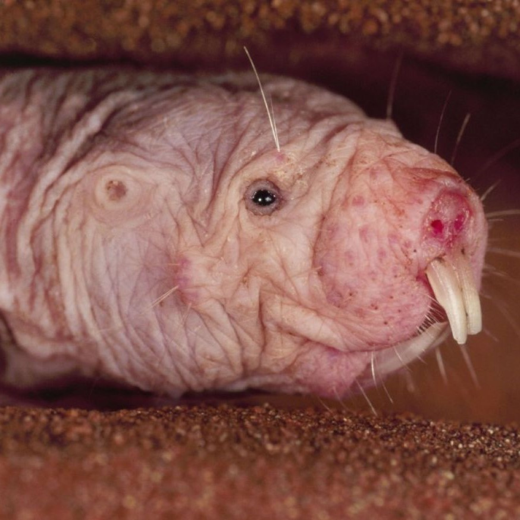
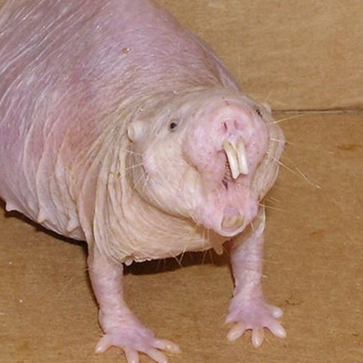
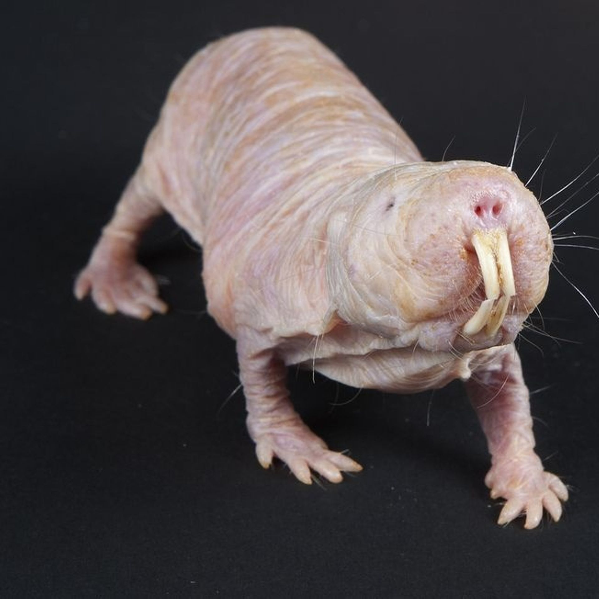
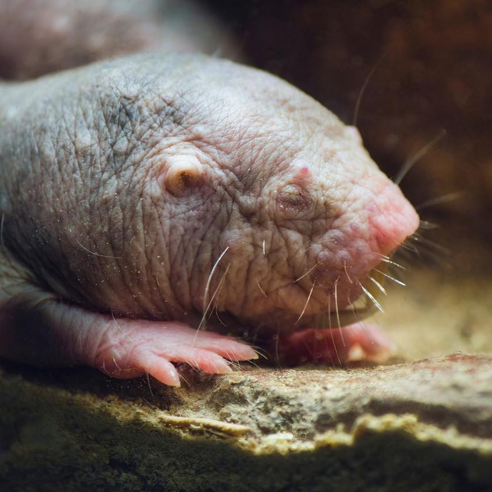
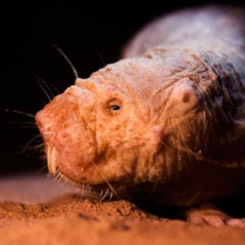
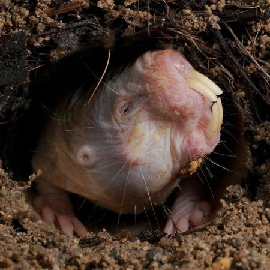
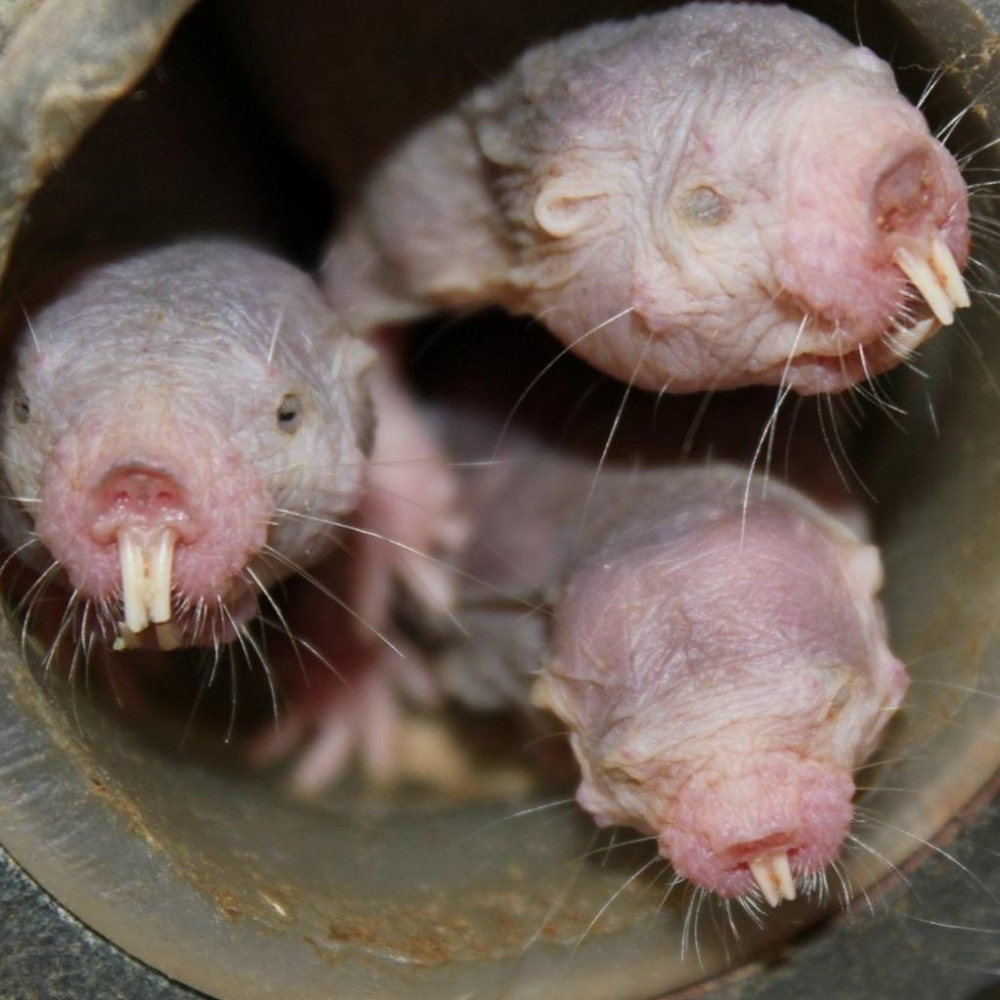
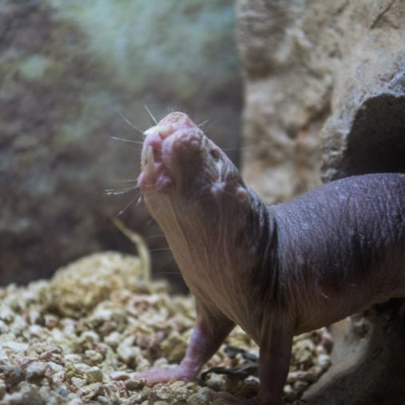
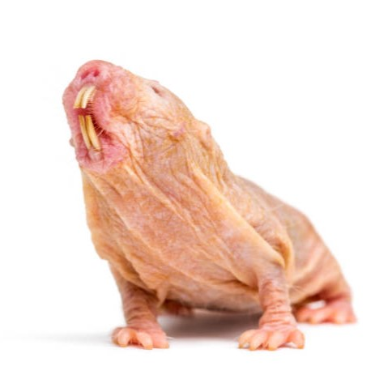
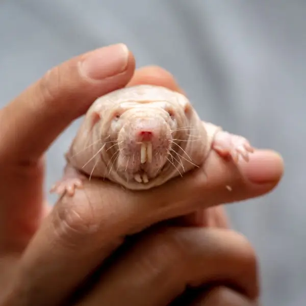

Plongée dans les mystères souterrains : Les Rat-taupes Nus

La Fascination des Rat-taupes Nus

L'Art de l'Adaptation : Les Rat-taupes Nus

Exploration Souterraine avec les Rat-taupes Nus

La Carapace Protectrice des Rat-taupes Nus

La Vie en Colonies : Les Rat-taupes Nus

Les Rat-taupes Nus en tant que Chasseurs Émérites

Le Sens du Toucher des Rat-taupes Nus

Exploration du Mystère Souterrain : Les Rat-taupes Nus
